Salón de la Industria Textil para la Confección Textile Industry Trade Fair for Garment Manufacturing
La plataforma de relacionamiento y generación de oportunidades comerciales para la industria textil y de confección de Colombia y la región. The platform for networking and commercial opportunity generation for the textile and garment industry of Colombia and the region.
Sobre el evento About the event
"El encuentro del ecosistema moda nacional e internacional."
CREATEX es la plataforma de relacionamiento, generación de oportunidades comerciales y acceso a nuevos mercados para empresarios nacionales de la cadena de proveeduría, insumos, textiles, maquinaria, paquete completo mayorista y servicios transversales, con toda la oferta de bienes y servicios para confeccionistas, fabricantes, importadores y comercializadores.
Organizado por la Cámara Colombiana de la Confección y Afines (CCCyA) y Corferias, el salón conecta oferta y demanda especializada durante tres días de actividad comercial, académica y de relacionamiento.
En su octava edición, CREATEX 2026 reconoce el rol estratégico de los territorios: Bogotá-Cundinamarca concentra el 31,2 % de las empresas del sector textil colombiano, mientras que Antioquia, Valle del Cauca, Santander y Nariño aportan sus especializaciones únicas.
"The meeting point of the national and international fashion ecosystem."
CREATEX is the platform for networking, commercial opportunity generation and access to new markets for national entrepreneurs across the full supply chain: raw materials, textiles, machinery, full-package wholesale and cross-cutting services — providing the complete offering for garment makers, manufacturers, importers and retailers.
Organized by the Colombian Chamber of Garment Manufacturing and Related Industries (CCCyA) and Corferias, the fair connects specialized supply and demand across three days of commercial, academic and networking activity.
In its eighth edition, CREATEX 2026 acknowledges the strategic role of Colombia's regions: Bogotá-Cundinamarca concentrates 31.2% of Colombian textile companies, while Antioquia, Valle del Cauca, Santander and Nariño each contribute their unique specializations.
Estructura del evento Event structure
Cada componente articula una dimensión diferente de la experiencia CREATEX, respondiendo a las necesidades actuales de la industria.
Each component articulates a different dimension of the CREATEX experience, responding to the current needs of the industry.
Espacios temáticos Thematic spaces
Industria textil 2026 Textile industry 2026
Imágenes del evento Event images
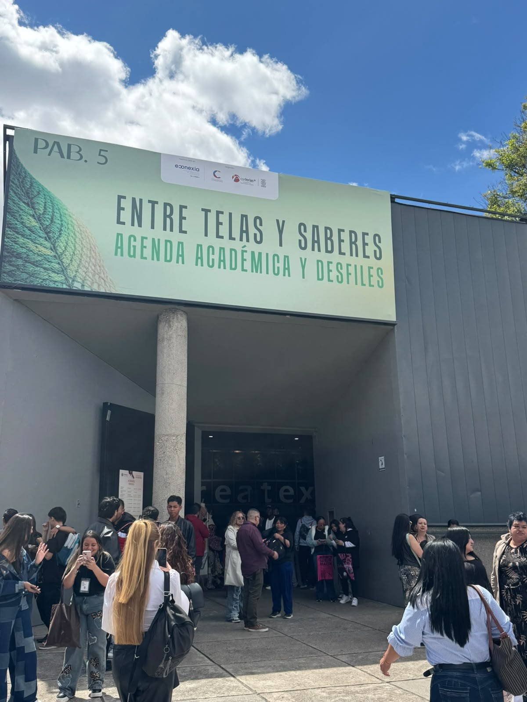
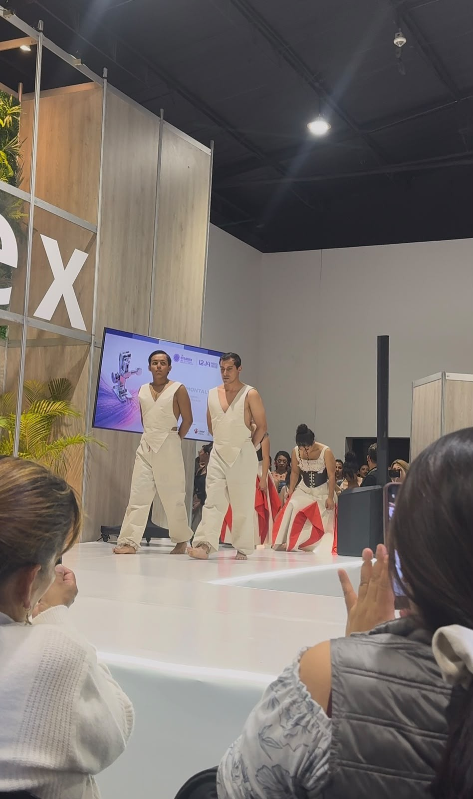
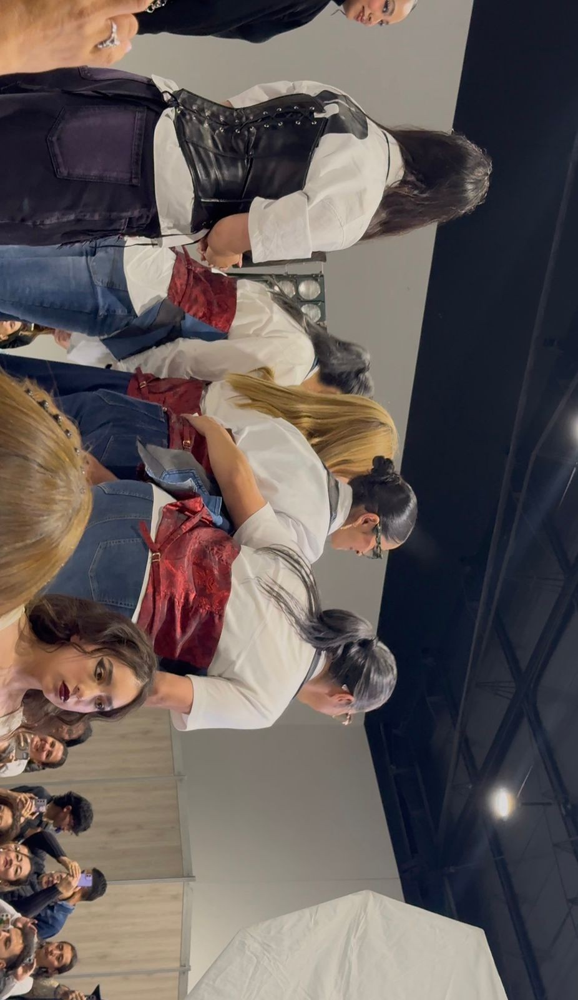
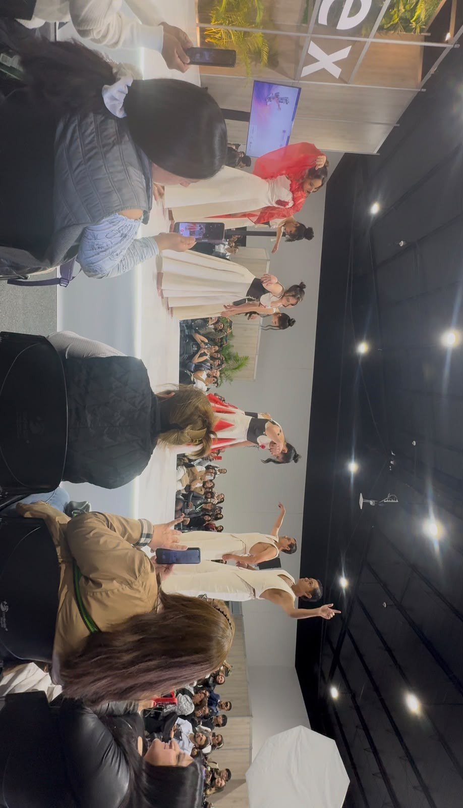
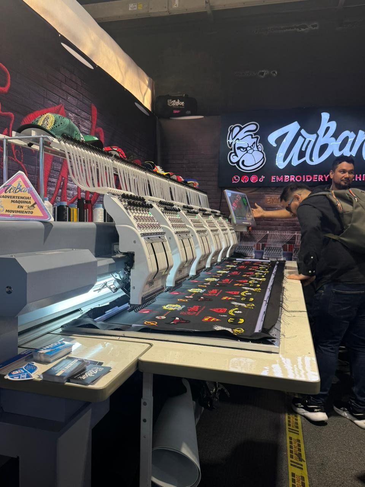
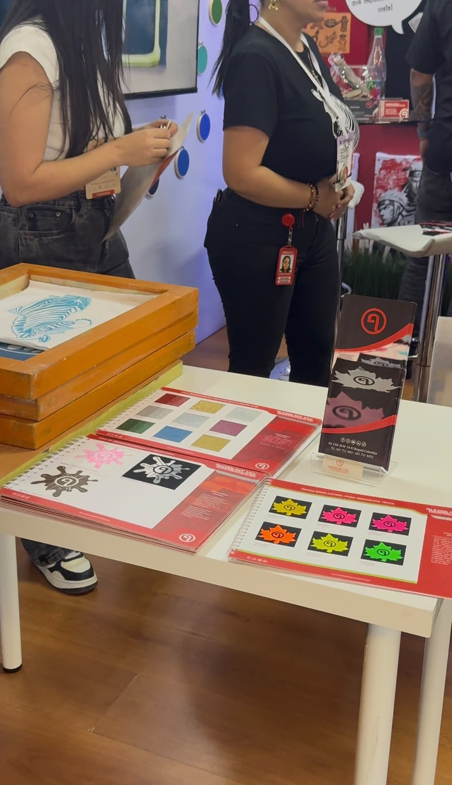
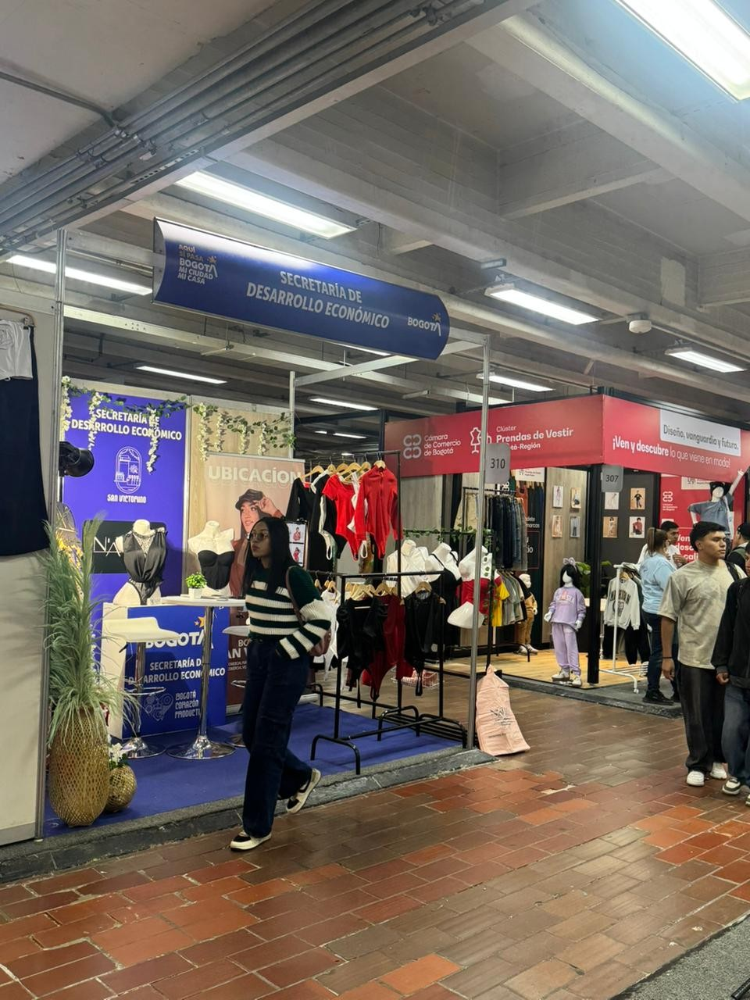
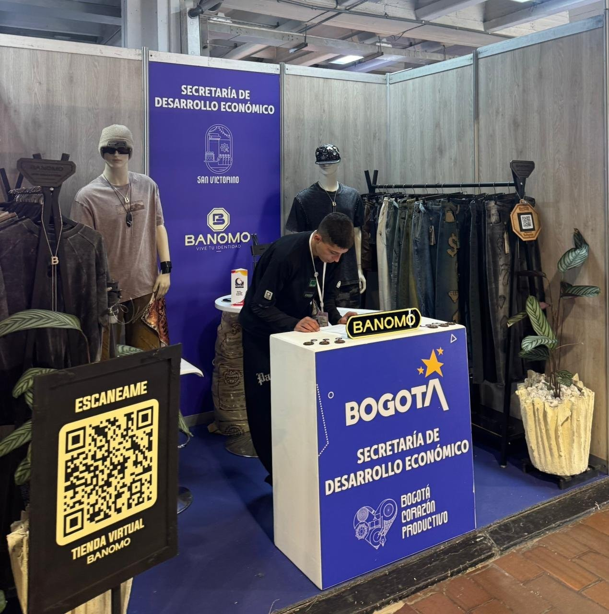
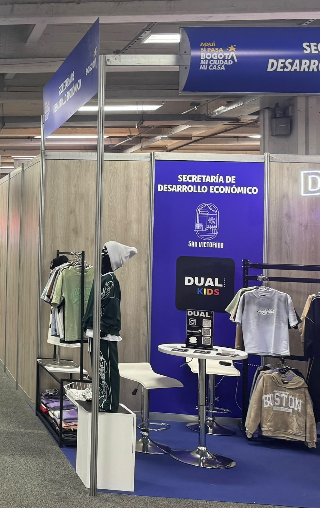
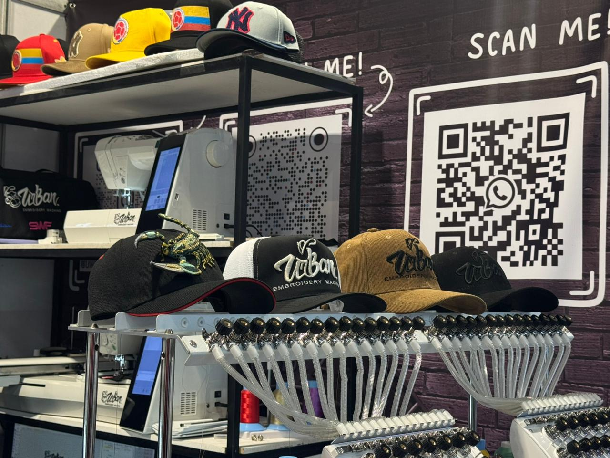
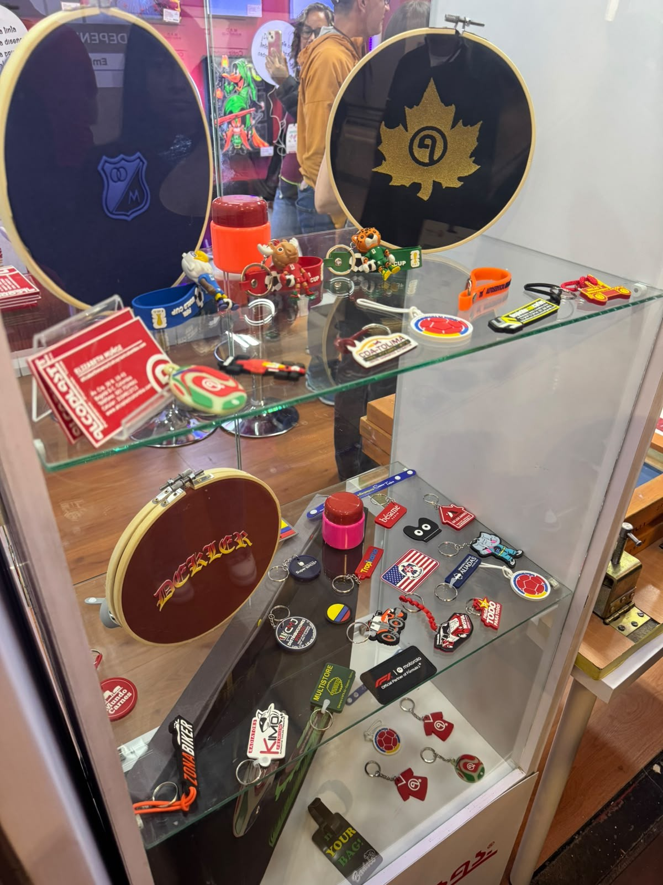
Vocabulary / Vocabulario
35 términos técnicos clave del sector textil y de confección aprendidos en CREATEX 2026. 35 key technical terms from the textile and garment sector learned at CREATEX 2026.
| Term (EN) | Traducción (ES) | Definition / Definición |
|---|---|---|
| Textile | Textil | Any material made of interlacing fibers, including woven, knitted or nonwoven fabrics. / Todo material elaborado con fibras entrelazadas, tejidas o unidas. |
| Fiber | Fibra | The basic unit of a textile material; can be natural (cotton, wool, silk) or synthetic (polyester, nylon). / Unidad básica del material textil: natural o sintética. |
| Yarn | Hilo / Hilado | A continuous strand of twisted fibers used in weaving, knitting or sewing. / Hebra continua de fibras torsionadas usada en tejido o costura. |
| Fabric | Tela / Tejido | A cloth produced by weaving, knitting or bonding fibers. / Paño producido por tejido o unión de fibras textiles. |
| Warp | Urdimbre | The set of vertical threads held fixed in a loom during weaving. / Conjunto de hilos verticales fijos en el telar durante el tejido. |
| Weft | Trama | The horizontal threads woven across the warp to create fabric. / Hilos horizontales entretejidos con la urdimbre para formar la tela. |
| Loom | Telar | A device used to weave cloth by interlacing warp and weft threads. / Dispositivo para tejer tela entrelazando urdimbre y trama. |
| Dyeing | Teñido | The process of adding color to textile products using dye substances. / Proceso de añadir color a productos textiles mediante tintes químicos o naturales. |
| Finishing | Acabado | Treatments applied to fabric after production to improve appearance, texture or performance. / Tratamientos aplicados a la tela para mejorar apariencia, tacto o función. |
| Pattern Making | Patronaje | The craft of creating templates for cutting fabric pieces to construct a garment. / Arte de crear moldes para cortar tela y construir prendas con precisión. |
| Garment | Prenda de Vestir | A finished clothing item ready for use or sale. / Artículo de ropa terminado, listo para su uso o comercialización. |
| Supply Chain | Cadena de Suministro | The network of producers, suppliers and distributors involved in making and delivering a product. / Red de productores, proveedores y distribuidores de un producto. |
| Circular Economy | Economía Circular | An economic model that eliminates waste by reusing, repairing and recycling materials continuously. / Modelo económico que elimina residuos reutilizando y reciclando materiales. |
| Sustainable Fashion | Moda Sostenible | An approach to fashion design and production that minimizes environmental and social harm. / Enfoque que minimiza el impacto ambiental y social de la producción de moda. |
| Smart Textiles | Textiles Inteligentes | Fabrics with embedded technologies that can sense, react or adapt to external stimuli. / Telas con tecnologías embebidas que perciben y reaccionan a estímulos del entorno. |
| Upcycling | Reutilización Creativa | Converting waste materials into new materials or products of higher quality or value. / Convertir materiales de desecho en productos de mayor calidad o valor. |
| Deadstock | Stock Muerto / Tela Sobrante | Unsold or unused fabric inventory from manufacturers or retailers. / Inventario de telas no vendidas o sin usar por fabricantes o comerciantes. |
| Traceability | Trazabilidad | The ability to track each stage of a product's journey from raw material to finished good. / Capacidad de rastrear cada etapa del producto desde la materia prima hasta el consumidor. |
| Sourcing | Abastecimiento | The process of identifying and obtaining raw materials or finished goods from suppliers. / Proceso de identificar y obtener materiales o productos de proveedores seleccionados. |
| Digital Printing | Impresión Digital | A method of applying color and patterns to fabric using digitally controlled inkjet systems. / Método de aplicar color y diseños a tela mediante sistemas de inyección digital. |
| CAD | Diseño Asistido por Computadora | Computer-Aided Design — software used to create precise textile patterns and garment constructions. / Software para crear patrones textiles y construcciones de prendas con precisión digital. |
| Embroidery | Bordado | The art of decorating fabric with needle and thread, executed by hand or machine. / Arte de decorar tela con aguja e hilo, a mano o con maquinaria especializada. |
| Seam | Costura | A line of stitching that joins two or more pieces of fabric together structurally. / Línea de puntadas que une dos o más piezas de tela de forma estructural. |
| Lining | Forro | A layer of fabric attached to the inside of a garment to improve comfort and structure. / Capa de tela en el interior de una prenda que mejora la comodidad y la estructura. |
| Hem | Dobladillo | A finished edge of a garment made by folding and stitching the fabric back on itself. / Borde terminado de una prenda formado doblando y cosiendo la tela sobre sí misma. |
| Trimming | Avío | Accessories and supplementary materials used in garment construction: buttons, labels, zippers, tapes. / Accesorios y materiales complementarios en la confección: botones, etiquetas, cierres, cintas. |
| Full Package | Paquete Completo | A manufacturing model where a single supplier provides all services from sourcing to finished garment. / Modelo donde un proveedor ofrece todos los servicios, desde materiales hasta prenda terminada. |
| Fast Fashion | Moda Rápida | A high-speed, high-volume production model that replicates current trends at low cost. / Modelo de producción masiva y veloz que replica tendencias a bajo costo y corta durabilidad. |
| Slow Fashion | Moda Lenta | A movement advocating for slower production cycles, ethical supply chains and quality over quantity. / Movimiento que promueve ciclos lentos, cadenas éticas y calidad sobre cantidad en moda. |
| GOTS | Estándar Textil Orgánico Global | Global Organic Textile Standard — the world's leading standard for organic fiber processing. / Estándar líder mundial para el procesamiento de fibras orgánicas con criterios ambientales y sociales. |
| Mercerization | Mercerización | A chemical treatment for cotton that increases luster, tensile strength and dye affinity. / Tratamiento químico del algodón que aumenta brillo, resistencia y afinidad al tinte. |
| Knitting | Tejido de Punto | A fabric-making method using interlocking loops of yarn, creating stretch and flexibility. / Método de fabricar tela usando lazos entrelazados de hilo, que otorga elasticidad y flexibilidad. |
| Biodegradable | Biodegradable | Materials that decompose naturally through microbial action, reducing long-term environmental impact. / Materiales que se descomponen naturalmente por acción microbiana, reduciendo el impacto ambiental. |
| Nonwoven | No Tejido / Tela Sin Tejer | A fabric made by bonding or felting fibers together without weaving or knitting. / Tela elaborada uniendo o fieltrado fibras sin proceso de tejido convencional. |
| Mercado Vertical | Vertical Market | A market that serves a specific industry's needs exclusively, such as technical protective textiles. / Mercado que atiende exclusivamente las necesidades de una industria específica, como textiles técnicos. |
Reflexión final del estudiante Student's final reflection
CREATEX 2026 representa mucho más que una feria comercial: es el espejo de una industria textil en plena transformación. En un mundo donde el consumidor exige transparencia y responsabilidad, los modelos de producción lineal están siendo reemplazados por cadenas productivas circulares, y las empresas que no integren la sostenibilidad como eje estratégico quedarán relegadas.
La moda circular, los textiles inteligentes y la digitalización no son tendencias pasajeras: son la nueva infraestructura del sector. Asistir a CREATEX es comprender que la innovación no ocurre en laboratorios aislados, sino en el cruce entre la fibra, la máquina, el diseñador y el mercado. Es en ese cruce donde se construye la ventaja competitiva de la industria colombiana.
Como futuro profesional del sector, CREATEX me enseña que la formación técnica debe dialogar permanentemente con la realidad del sector. La sostenibilidad es una oportunidad comercial, no solo una responsabilidad ética. La tecnología textil es una herramienta de diferenciación, y las redes de relacionamiento construidas en espacios como este son el capital más valioso de la cadena de confección de Colombia y la región.
CREATEX 2026 represents far more than a trade fair: it is the mirror of a textile industry in full transformation. In a world where consumers demand transparency and accountability, linear production models are being replaced by circular supply chains, and companies that fail to embed sustainability as a strategic pillar will inevitably fall behind.
Circular fashion, smart textiles and digitalization are not passing trends — they are the new infrastructure of the sector. Attending CREATEX means understanding that innovation does not occur in isolated laboratories, but at the intersection of fiber, machinery, design and the market. It is at that intersection where Colombia's competitive industrial advantage is built.
As a future industry professional, CREATEX teaches me that technical training must maintain a permanent dialogue with the reality of the sector. Sustainability is a commercial opportunity, not merely an ethical responsibility. Textile technology is a tool for differentiation, and the networks built in spaces like this one represent the most valuable capital in Colombia's garment production chain and the wider region.